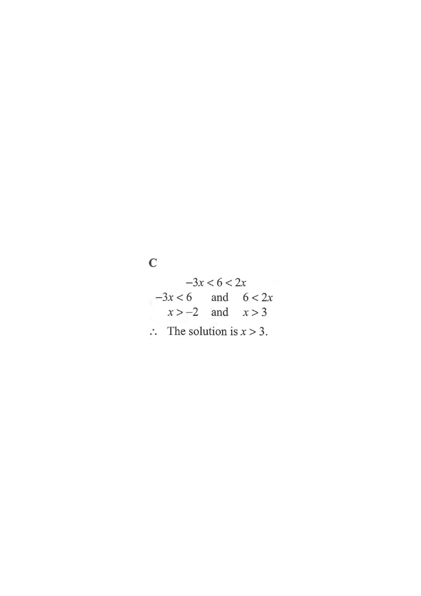

Question. The solution of $\dfrac{x-3}{x} > 0$ is

1
Identify the critical points
The expression $\dfrac{x-3}{x}$ can only change sign where the numerator or the denominator is zero.
Numerator $=0 \Rightarrow x=3$; Denominator $=0 \Rightarrow x=0$ (this value is not allowed).
2
Mark the points on a number line
The two critical points $x=0$ and $x=3$ split the real line into three intervals:
\[ (-\infty,\,0),\quad (0,\,3),\quad (3,\,\infty) \]
Hollow dots at $0$ and $3$: both are excluded (0 makes the denominator zero, 3 makes the expression 0, not $>0$).
Critical Values of a Rational Expression
\(\dfrac{A}{B}=0\iff A=0\quad (B\ne 0)\)
So \(\dfrac{x-3}{x}\) can change sign only at \(x=3\) (numerator zero) and \(x=0\) (not allowed).
3
Test the sign in each interval
| Interval | Test value | Sign of $x-3$ | Sign of $x$ | $\dfrac{x-3}{x}$ |
|---|---|---|---|---|
| $x<0$ | $-1$ | $-$ | $-$ | $+$ |
$0| $1$ | $-$ | $+$ | $-$ | |
| $x>3$ | $4$ | $+$ | $+$ | $+$ |
A “$+$ over $-$” or “$-$ over $+$” gives a negative value — only the same-sign rows give $+$.
4
Select the intervals where the expression is positive
From the table, $\dfrac{x-3}{x}>0$ is satisfied on
\[ x<0 \quad \text{or} \quad x>3. \]
Both critical points are excluded, so the solution is a strictly open union of intervals.
Sign of a Quotient
\(\dfrac{A}{B}>0\iff AB>0\quad (B\ne 0)\)
Here \((x-3)x>0\) exactly when the two factors have the same sign, i.e. \(x<0\) or \(x>3\).
5
Match with the options
Comparing with the choices, $x<0$ or $x>3$ is exactly option C.
Quick sanity check: $x=-1$ works, $x=1$ fails, $x=4$ works. ✔
Answer: C — $x<0$ or $x>3$ (both critical points excluded)
PRACTICESimilar question — try it yourself
Question. The solution of \(\dfrac{x+2}{x-5}<0\) is
A. \(-2
Show the worked solution
Step 1. The critical values are \(x=-2\) (numerator zero) and \(x=5\) (denominator zero, not allowed). They split the line into \(x<-2\), \(-25\).
Step 2. Test one value in each interval: \(x=-3\) gives \(\dfrac{-1}{-8}>0\); \(x=0\) gives \(\dfrac{2}{-5}<0\); \(x=6\) gives \(\dfrac{8}{1}>0\).
Step 3. Only the middle interval is negative, and both ends are excluded, so the solution is \(-2
Answer: A. \(-2